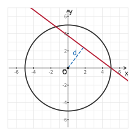

例題 4図形と方程式 円が直線から切り取る弦の長さ
円 \(x^2+y^2=25\) が直線 \(3x+4y-15=0\) から切り取る弦の長さを求めよ。
解き方（まず考え方）
弦の長さは直角三角形で求める。中心から弦に下ろした垂線の足は弦の中点。\[\left(\dfrac l2\right)^2+d^2=r^2\ \Rightarrow\ l=2\sqrt{r^2-d^2}\] 連立して交点を求めなくてよい。
コツ弦を半分にして、中心から垂線を引く。直角三角形の三平方の定理だけで終わる。
解答
STEP 1 中心から直線までの距離 \(d\)
円の中心 \((0,\ 0)\)、半径 \(\sqrt{25}\)。
\[d=\dfrac{|3\cdot0+(4)\cdot(0)+(-15)|}{\sqrt{3^2+(4)^2}}=\dfrac{15}{\sqrt{25}}=3\]STEP 2 三平方の定理で弦の半分を求める
弦の中点と中心を結ぶと垂直。半径 \(r\)、距離 \(d\)、弦の半分 \(\dfrac{l}2\) が直角三角形をつくる。
\[\left(\dfrac l2\right)^2=r^2-d^2=25-9=16\]
STEP 3 弦の長さ
\[l=2\sqrt{16}=8\]
【答案（テストに書く形）】
\[8\]答
練習問題 4
- 円 \((x-1)^2+(y+2)^2=20\) が直線 \(x+2y-3=0\) から切り取る弦の長さを求めよ。
- 円 \(x^2+y^2=25\) が直線 \(4x-3y+10=0\) から切り取る弦の長さを求めよ。
- 円 \((x-2)^2+(y-1)^2=16\) が直線 \(3x-4y+2=0\) から切り取る弦の長さを求めよ。